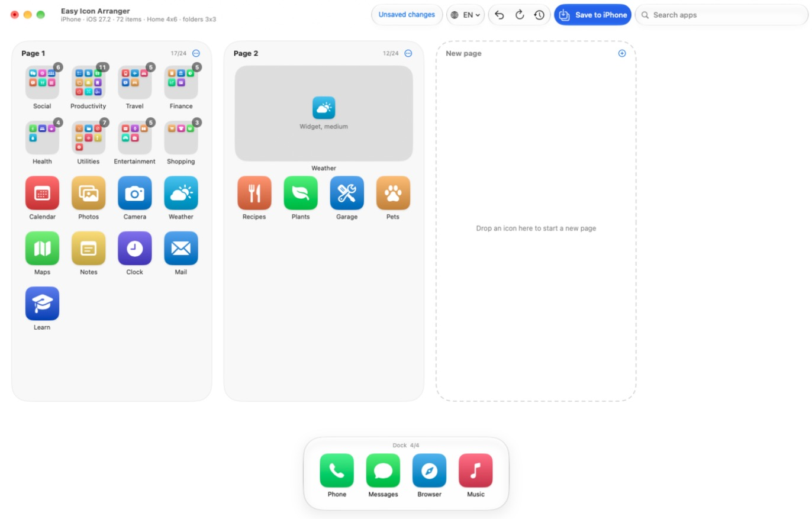
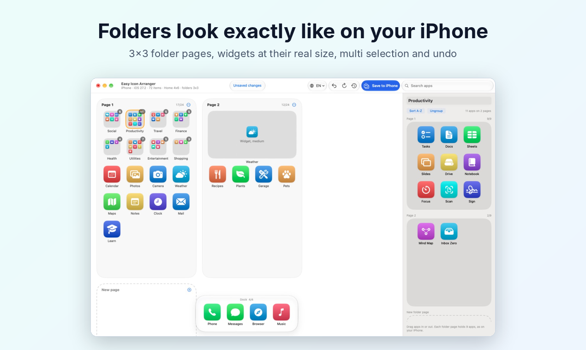
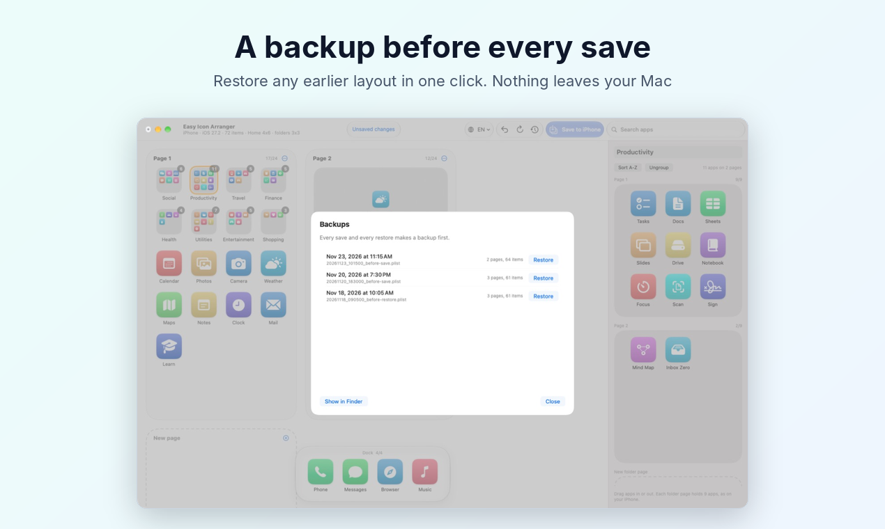

Rearrange your iPhone Home Screen from your Mac
Drag and drop apps, folders and pages over USB, then save in one click. No iPhone Mirroring needed, so it works in the EU.

Made for the iPhone you already have
Moving dozens of icons on the phone itself is slow and fiddly. The usual shortcuts either do not exist in Europe or ask too much of your phone.
No iPhone Mirroring needed
iPhone Mirroring is not available in the European Union. Easy Icon Arranger talks to the phone over a USB cable instead, so it works everywhere.
No supervision, no erase
Apple Configurator can edit the Home Screen only on supervised devices, which means erasing the phone first. Here nothing is installed or reset: just connect and trust the Mac.
Everything on one screen
All your pages, the Dock and your folders, with the real app icons, laid out the way the iPhone shows them.
- Drag and dropMove apps between pages, into and out of folders and into the Dock.
- Folders as on the phone3x3 folder pages, rename, sort A to Z or ungroup in one click.
- Multi selectionMove many apps at once or turn a selection into a new folder.
- Backup before every saveRestore any earlier layout in one click. Undo up to 200 steps.
- Safe savesRefuses to write if the phone changed meanwhile, then checks the result.
- 24 EU languagesFollows your macOS language. Native SwiftUI app, no network requests.


Install in a minute
The app is not signed with an Apple Developer ID yet, so macOS asks you to confirm it once.
- Download the DMG, open it and drag Easy Icon Arranger onto the Applications folder.
- Open it once, then go to System Settings, Privacy and Security, and click Open Anyway. Or run
xattr -dr com.apple.quarantine "/Applications/Easy Icon Arranger.app" - Connect your iPhone with a cable, unlock it and tap Trust if asked. Arrange, then press Save.
Requires an Apple silicon Mac with macOS 26 Tahoe or later and a USB cable. Wi-Fi is not supported. Prefer to build it yourself? The README explains how.
Support the project
Easy Icon Arranger is free and has no ads or tracking. If it saved you time, a coffee or a sponsorship keeps it going. A star or a fixed translation helps too.